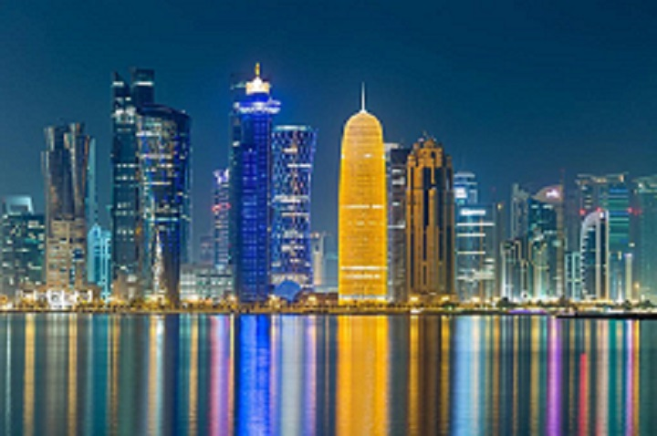
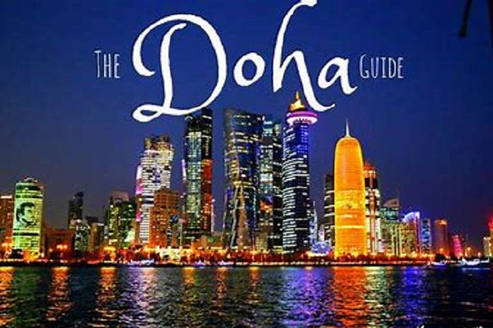

Doha, la capitale du Qatar, un pays péninsulaire situé sur le golfe persique, est une ville moderne bordant la baie de Doha. De nombreux parcs et la promenade de la Corniche longent le front de mer de son centre-ville. Le musée d'Art islamique, dessiné par I.M. Pei et implanté sur une île artificielle, abrite une vaste collection venant de tout le monde musulman. Au Souq Waqif, un marché traditionnel, les marchands proposent des produits tels que vêtements, objets artisanaux et épices.
Doha est une cité florissante d'environ 2 millions d'habitants qui offre un mélange fascinant de merveilles modernes et de traditions ancestrales. L'horizon étincelant qui accueille les nouveaux arrivants dans la capitale qatarienne constitue une vitrine vivante de la vaste richesse pétrolière du pays, qui a transformé la modeste ville de pêche et de plongée sous-marine qu'était Doha en une métropole cosmopolite.
Les journées ensoleillées sont presque garanties dans cette cité en plein désert, ce qui fait de ses musées, de ses centres commerciaux et de ses lieux de divertissement climatisés des endroits particulièrement prisés. Pourtant, ceux qui osent braver la chaleur sont récompensés par de belles plages dans et autour de la ville, ainsi que par de longues étendues de dunes vallonnées. Et si tout cela ne vous suffit pas, nous vous réservons encore quelques idées supplémentaires de choses à faire et à voir à Doha.